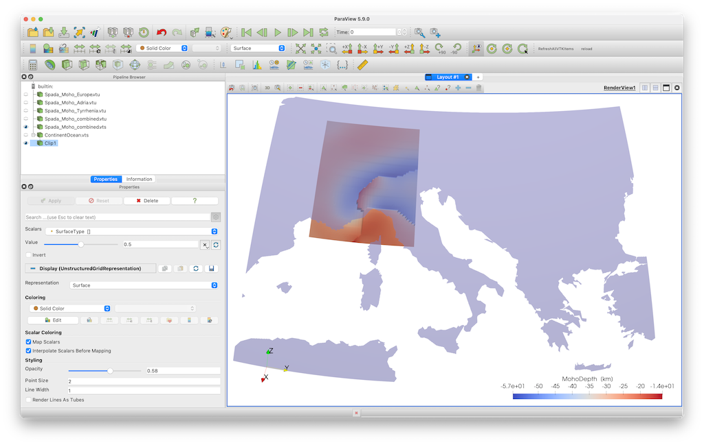

5 - Add coastlines
Goal
For orientation, it is often nice to add country borders and coastlines to your paraview plots.
Steps
1. Coast lines
1.1 Download land/sea data
The package GeoDatasets.jl has a simple interface to get a grid that explains whether the Earth surface is land, sea or a lake.
julia> using GeoDatasets
julia> lon,lat,data = GeoDatasets.landseamask(;resolution='l',grid=1.25);
julia> ind_lon = findall( (lon .> 0) .& (lon .< 30 ) );
julia> ind_lat = findall( (lat .> 35) .& (lat .< 50 ) );The parameter resolution should be either c,l,i,h or f (standing for crude, low, intermediate, high and full resolution)
1.2 Save in Paraview
julia> Lon,Lat,Depth = LonLatDepthGrid(lon[ind_lon],lat[ind_lat],0km);
julia> data_surf = zeros(size(Lon));
julia> data_surf[:,:,1] = data[ind_lon,ind_lat]
julia> data_surface = GeoData(Lon, Lat, Depth, (SurfaceType=data_surf,))
julia> Write_Paraview(data_surface, "ContinentOcean") The result is shown here, together with Moho data
